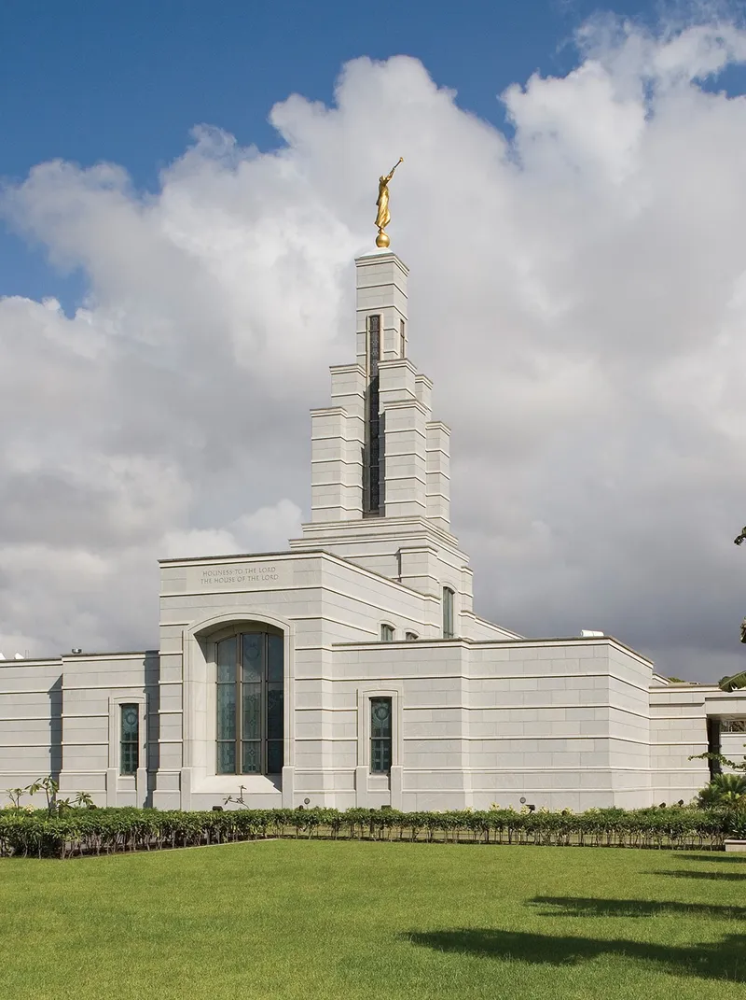
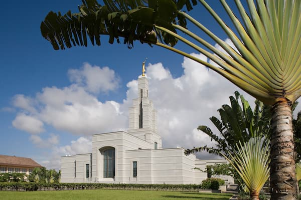
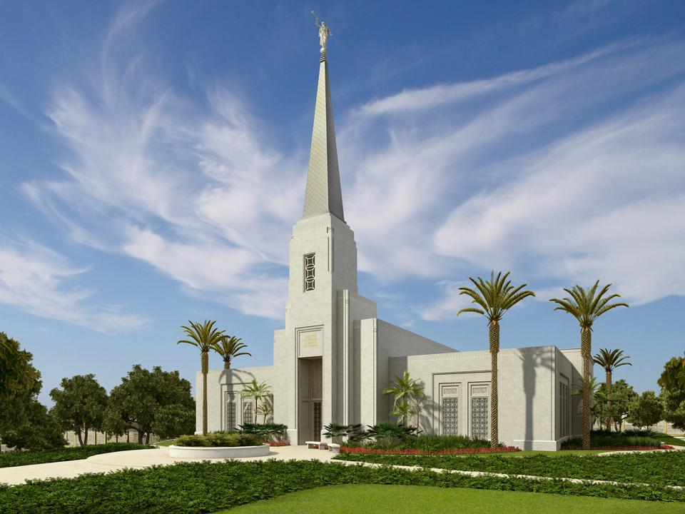

Temple Album
☰
Home
Old
New
Large
Small
Home
Accra Ghana Temple

Aba Nigeria Temple
Durban South Africa Temple
Johannesburg South Africa Temple

Kinshasa DR Congo Temple
Abidjan Ivory Coast Temple
Nairobi Kenya Temple

Harare Zimbabwe Temple
Luanda Angola Temple